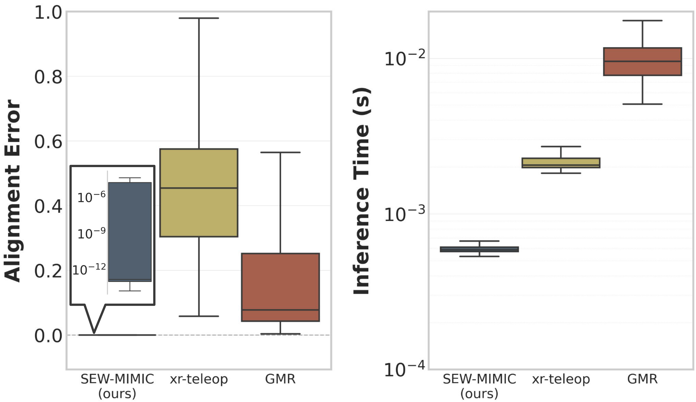
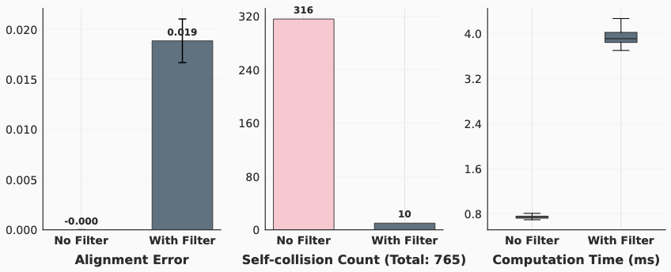
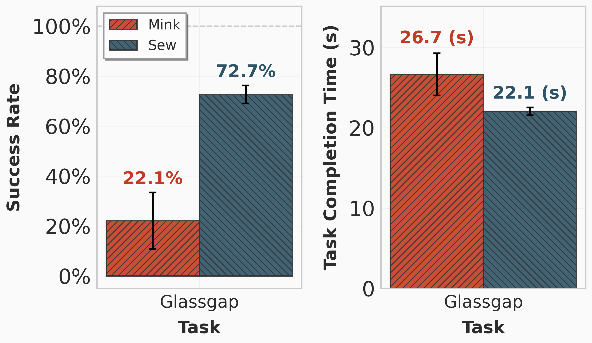
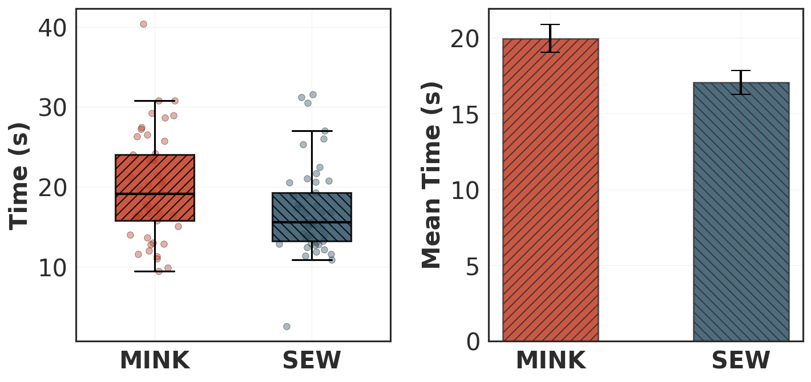
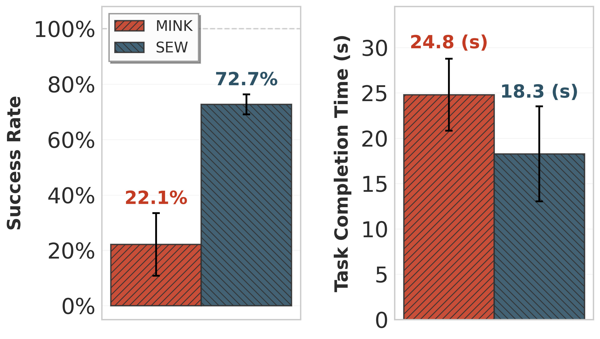
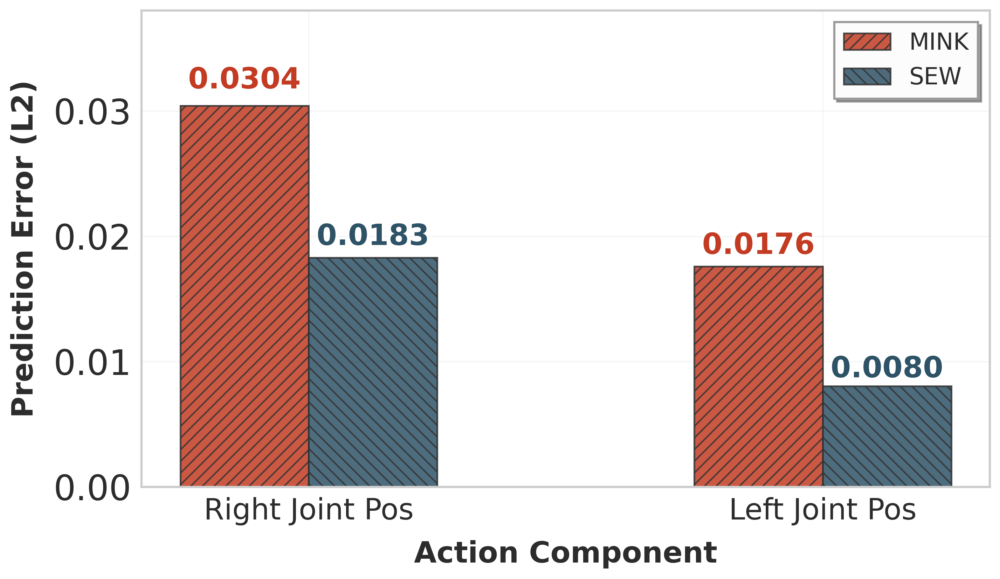
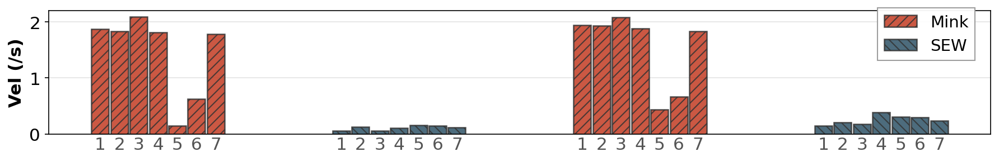
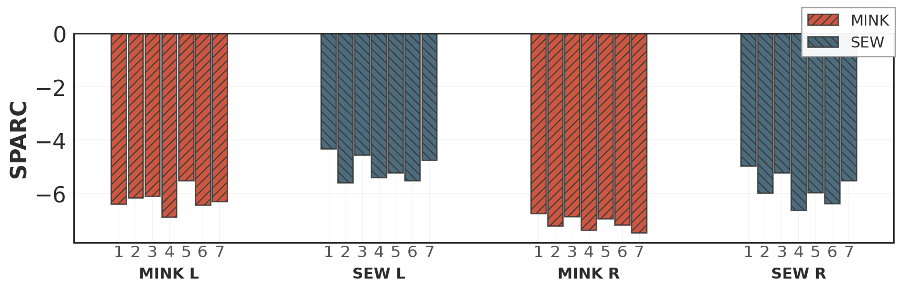
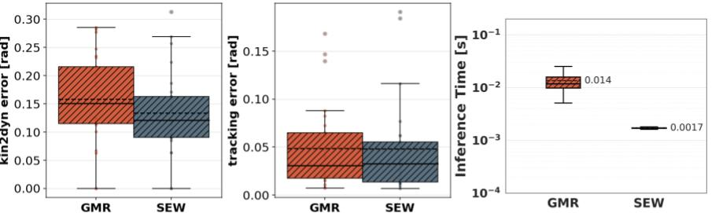
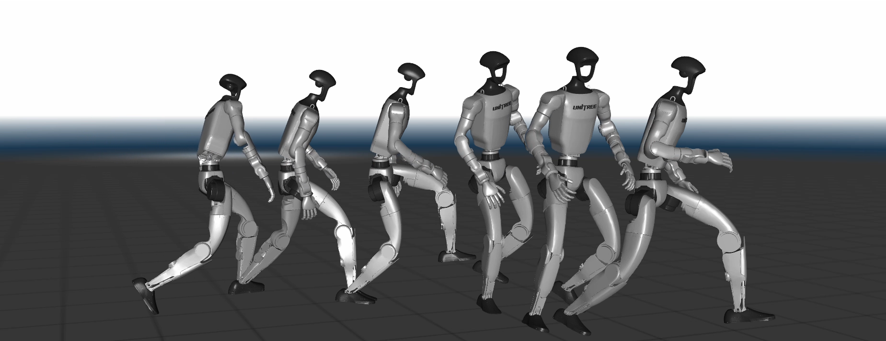

Paper Section VI-AFigure 5
Retargeting Accuracy & Performance
Evaluated on LAFAN-1 dataset (upper body motion only) on Unitree G1 robot

Evaluated on LAFAN-1 dataset (upper body motion only) on Unitree G1 robot

Our safety filter dramatically reduces self-collision of the robot.

We compare the success of novice teleoperators (n=8) in difficult manipulation tasks.*³


SEW-based action representation improves training results of autonomous task policies.


SEW demonstrations show smoother command profiles and less aggressive velocity spikes.


SEW-Mimic serves as a drop-in replacement of GMR for the TWIST policy.

